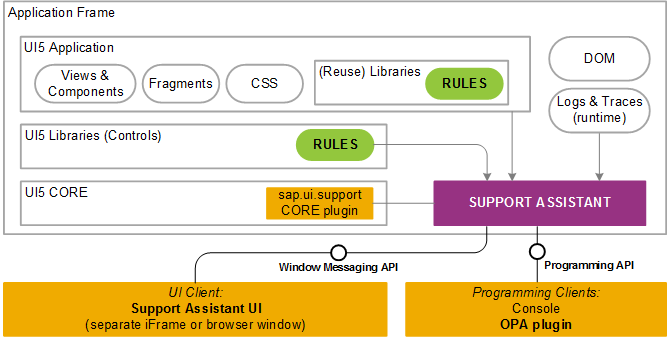

The Support Assistant is currently separated into two main parts:
Core plug-in in OpenUI5
UI client running in an iFrame or separate window, or programmable clients via an API
In the following diagram you can see how the Support Assistant is connected to the individual application layers.

There are two different use cases for its integration:
Using browser window messaging protocol for agents in other window frames;
Using the sap.ui.support.RuleAnalyzer module (for example, from the
console or as part of OPA tests).
The window messaging API is an asynchronous API based on the browser low-level
postMessage/onMessage APIs. It is enabled by
using a custom generic communication bus component -
WindowCommunicationBus, delivered with the Support Assistant.
The WindowCommunicationBus is used for implementing the remote UI
interaction between the Support Assistant and the application
iFrame.
This section illustrates how to use the Support Assistant programming
API through specific sap.ui.support.RuleAnalyzer API
examples.
After the Support Assistant has been started, if in silent mode, you can add a
new temporary rule by using the addRule method. Then you can
run an analysis with this rule.
sap.ui.require(["sap/ui/support/RuleAnalyzer"],
function (RuleAnalyzer) {
var oRule = {
id: "Temp rule id",
title: "Temp rule title",
...
};
RuleAnalyzer.addRule(oRule);
});For more information about rule properties, see Guidelines and Best Practices.
The Support Assistant API allows you to:
Run a complete analysis on all components and rules. This analysis returns all issues.
sap.ui.require(["sap/ui/support/RuleAnalyzer"],
function (RuleAnalyzer) {
RuleAnalyzer.analyze().then(function() {
var oHistory = RuleAnalyzer.getLastAnalysisHistory();
...
});
});Run a complete analysis, using custom metadata. The analysis history will contain this metadata.
sap.ui.require(["sap/ui/support/RuleAnalyzer"],
function (RuleAnalyzer) {
var oMetadata = {
…
};
RuleAnalyzer.analyze(null, null, oMetadata).then(function() {
var oHistory = RuleAnalyzer.getLastAnalysisHistory();
...
});
});Narrow down the analysis to a specific part of the app, for example only a sub-tree.
sap.ui.require(["sap/ui/support/RuleAnalyzer"],
function (RuleAnalyzer) {
var oExecutionScope = {
type: "subtree",
parentId: "panelId"
};
RuleAnalyzer.analyze(oExecutionScope).then(function() {
var oHistory = RuleAnalyzer.getLastAnalysisHistory();
...
});
});For more information, see Execution Scope.
Check for issues using specific rules.
sap.ui.require(["sap/ui/support/RuleAnalyzer"],
function (RuleAnalyzer) {
var oExecutionScope = {
type: "subtree",
parentId: "panelId"
};
var aRules = [{
ruleId: "inputNeedsLabel",
libName: "sap.m"
}];
RuleAnalyzer.analyze(oExecutionScope, aRules).then(function() {
var oHistory = RuleAnalyzer.getLastAnalysisHistory();
...
});
});Check for specific rules using rule presets.
The rule presets are semantically grouped rules which can be custom or system defined. They
can be imported and exported as JSON files. For
more information, see Rules Management.
Here is an example of running an analysis by using a custom preset:
sap.ui.require(["sap/ui/support/RuleAnalyzer"],
function (RuleAnalyzer) {
var oExecutionScope = {
type: "subtree",
parentId: "panelId"
};
var oCustomPreset = {
id: "CustomPreset",
title: "Custom",
description: "Custom rules",
selections: [{
ruleId: "inputNeedsLabel",
libName: "sap.m"
}]
};
RuleAnalyzer.analyze(oExecutionScope, oCustomPreset).then(function() {
var oHistory = RuleAnalyzer.getLastAnalysisHistory();
...
});
});
You can get the preset definition from an available JSON file and
pass it as a second parameter of the
analyze function instead of defining it
in your code.
Here is an example of running an analysis by using a system preset:
sap.ui.require(["sap/ui/support/RuleAnalyzer"],
function (RuleAnalyzer) {
var oExecutionScope = {
type: "subtree",
parentId: "panelId"
};
RuleAnalyzer.analyze(oExecutionScope, "Accessibility").then(function() {
var oHistory = RuleAnalyzer.getLastAnalysisHistory();
...
});
});Here is an example of running an analysis with system preset by accessing it through the
sap.ui.support.SystemPresets
enumeration:
sap.ui.require(["sap/ui/support/RuleAnalyzer"],
function (RuleAnalyzer) {
var oExecutionScope = {
type: "global"
};
RuleAnalyzer.analyze(oExecutionScope, sap.ui.support.SystemPresets.Accessibility).then(function() {
var oHistory = RuleAnalyzer.getLastAnalysisHistory();
...
});
});RuleAnalyzer.getAnalysisHistory() - Returns all the
analysis history objects.
RuleAnalyzer.getLastAnalysisHistory() - Returns the last
analysis history.
RuleAnalyzer.getFormattedAnalysisHistory(sap.ui.support.HistoryFormats)
- Returns the history in the format that has been passed. The default
format is string.